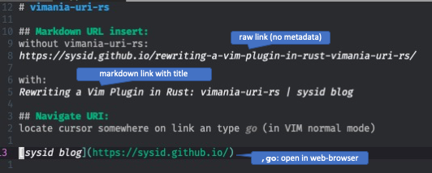

Rewriting a Vim Plugin in Rust: vimania-uri-rs
Advanced URI Handling for the Modern Vim User
Why?
Vim’s native gx command is somehow limited in its flexibility and capabilities. I wanted more powerful URI handling capabilities, which led me to create vimania-uri, a Vim plugin designed to provide advanced URI management within Vim.
However, while the plugin achieved its goal in terms of functionality, it came with a performance penalty: the initial loading of the plugin’s Python dependencies severely impacted Vim’s startup times. The plugin relied on dependencies such as beautifulsoup4 (bs4) and lxml, which are known for substantial size and complexity. As a result, the plugin introduced noticeable delays during Vim startup, with load times sporadically exceeding 3 seconds – painful for a vim user.
The new Plugin: vimania-uri-rs
Key Features
- Open URIs and Various File Types: Seamlessly open URIs, HTML files, DOCX, PPTX, JPG, PNG, MP3, and more.
- Handle Almost Any URI: Manage a wide range of URI formats, ensuring maximum compatibility and flexibility.
- Paste URLs as Markdown Links: Automatically fetch the title and create reference-style Markdown links for easy documentation.
- Jump to Headings or Line Numbers: Navigate directly to specific headings or line numbers within files for quick access.
- Bookmark Manager Integration: Load your URIs into Rust based CLI Bookmark Manager
bkmr.

Hypothesis
The idea to improve this situation was to replace the performance-critical parts of the Python code with a Rust implementation.
Rust’s reputation for speed, safety, and minimal runtime overhead made it an ideal candidate for this. However, writing Vim plugins in Rust is not yet a common practice, and due to the lack of established examples, I had to navigate the challenges largely on my own. Using ChatGPT proved to be very helpful, indeed.
I hypothesized that replacing the heavy dependencies with a bespoke, compiled Rust library would significantly improve startup performance.
Rust and Python are known to have excellent interoperability capabilities, making Rust an attractive option for optimizing the plugin’s performance without sacrificing its functionality.
Additionally, applying these optimizations to a Vim plugin posed an interesting problem per se. And since I am a heavy user of this plugin, I would enjoy any improvements directly.
Challenges
-
Cross-Platform Support:
- Ensuring that the plugin works seamlessly across different operating systems is a non-trivial challenge for Python alone, but adding a binary Rust library exacerbates the prolbem.
-
Keeping the Interface Simple:
- Maintaining the simplicity and intuitiveness of the user interface was a priority. While adding advanced features and improving performance were key goals, the plugin needed to remain easy to use, aligning with Vim’s ethos of minimalism and efficiency.
The Evolution into vimania-uri-rs
Refactoring Critical Parts in Rust
It was very clear from profiling startup times where the culprit lies: Loading the Python dependencies of the plugin. Luckily these dependencies where only used in a very isolated part of the code, so replacing this code with Rust was a straightforward refactoring path.
pyo3 plays a crucial role in bridging Rust and Python. It allowed me to re-write the identified components in Rust while retaining the flexibility and ease of use of Python for the rest of the plugin.
Building and Distributing the Plugin
Rust’s cross-compilation capabilities make it easy to ensure the plugin works on different platforms. The result was a set of platform-specific wheels that could be installed and used on any of these operating systems.
It was not too difficult to streamline the build and distribution process, by using Github Actions for a continuous integration (CI) pipeline.
Result
-
10x Startup Time Improvement: My hpythises proved right: The refactor yielded significant performance gains, reducing Vim’s startup time from over 3 seconds to just 0.3 seconds. This 10x improvement was immediately noticeable, making the plugin much more user-friendly and responsive.
-
User Interface: Despite the significant changes under the hood, the plugin’s user interface did not change.
-
Code Maintainability: By only writing a small isolated portions of the code in Rust, the plugin retains the simplicity and expressiveness of Python for the majority of its functionality. This hybrid approach ensures that the codebase remains maintainable and extensible, while also benefiting from Rust’s performance advantages.
Conclusion
The journey from vimania-uri to vimania-uri-rs was rewarding. The final product is a powerful, responsive, and elegant solution for advanced URI handling in Vim.
Using Rust for Vim plugins is straightforward through Python as intermediary. With proper code architecture the benefits
of both worlds can be combined while keeping the additional complexity managable.
If you’re looking for a way to enhance your Vim experience, I encourage you to try out vimania-uri-rs. Your feedback and contributions are always welcome!
Here is the code!